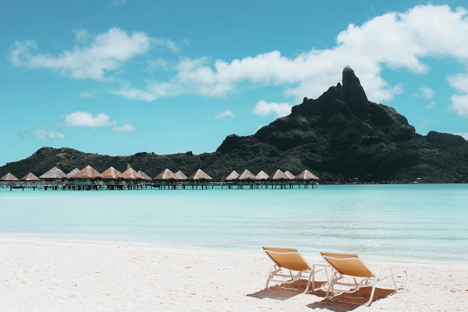
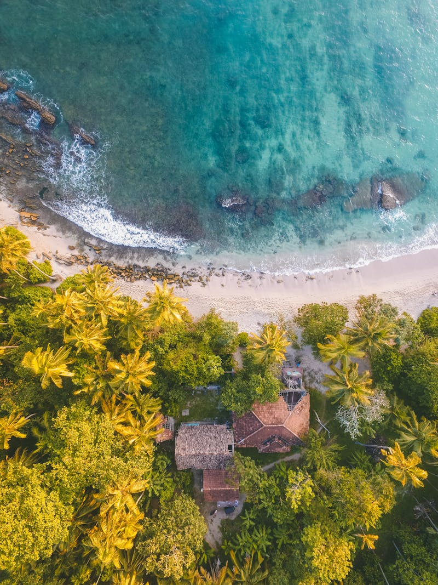
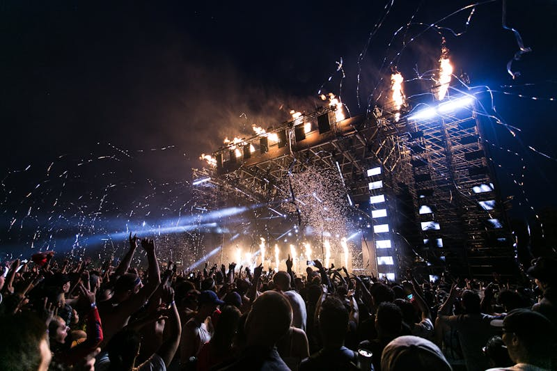
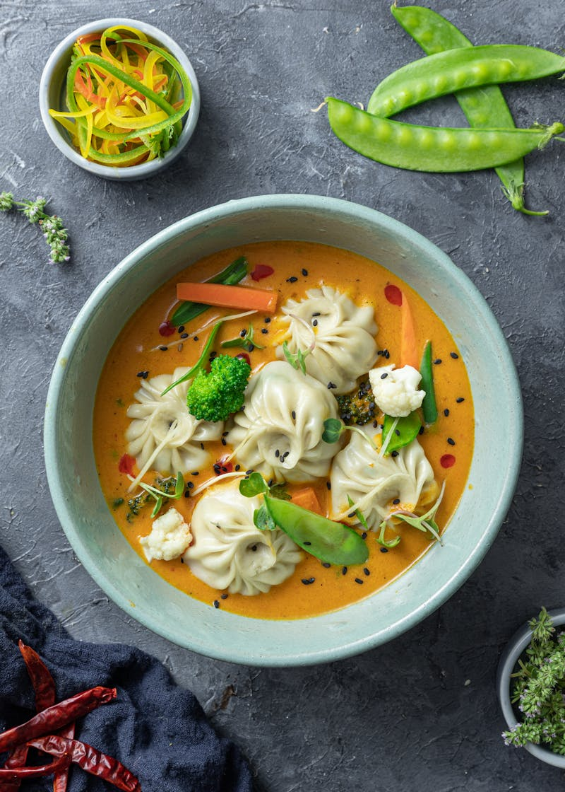
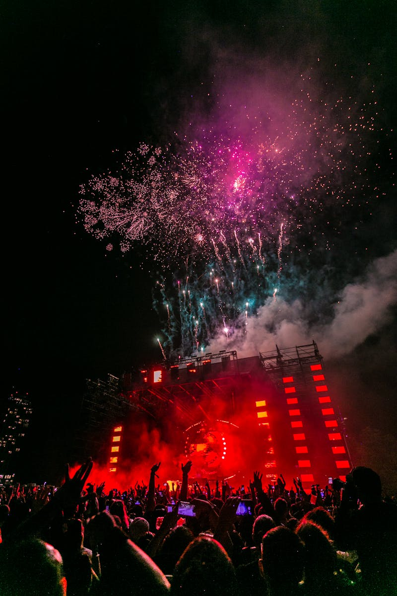
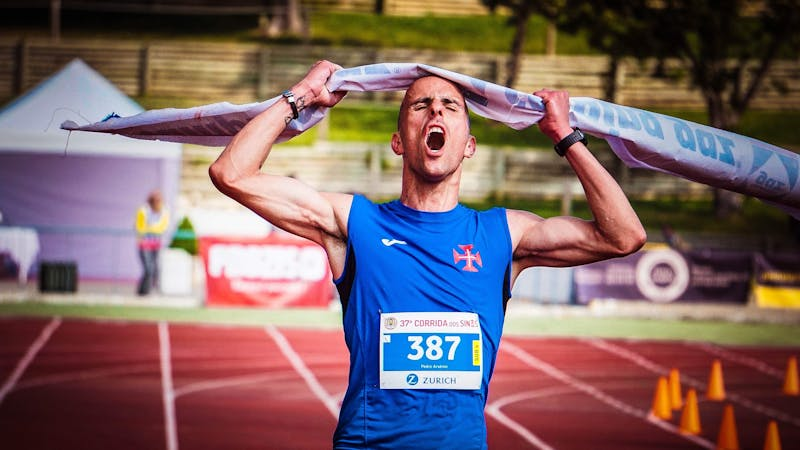
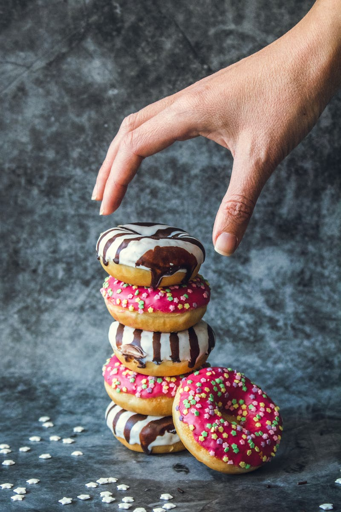
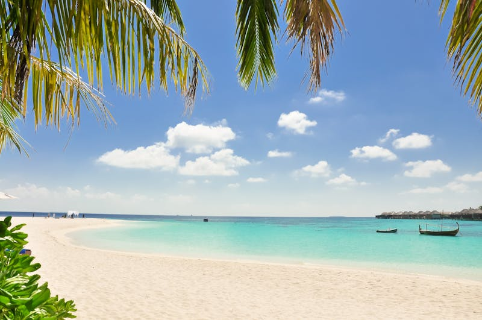

Festival Pantai
Cuti-Cuti Malaysia
MADANI
A proposal by
Talenta Ideas Sdn. Bhd.
April 7, 2026

Beach
Festival
Cuti-Cuti Malaysia MADANI 2026
A nationwide beach festival initiative across 14 stunning coastlines, supporting Visit Malaysia 2026 with cultural performances, traditional cuisine, handicrafts, and affordable travel for all Malaysians.

Why This Festival?
A year-long initiative to transform Malaysia's coastlines into vibrant cultural destinations under the Visit Malaysia 2026 campaign.
Encourage domestic tourism and inspire Malaysians to explore their own country's beautiful coastlines.
Accessible travel packages targeting suburban communities and B40 groups through Rahmah MADANI.
Showcase community products, traditional cuisines, and local handicrafts at affordable prices.
Help rural communities through MADANI Sales while promoting each beach as a distinctive destination.
14 Beaches Across Malaysia
Spanning every state from January to December 2026
Festival Destinations


Festival Site Layout
Each festival location features a carefully designed layout to ensure a vibrant, organized, and memorable experience for all visitors.
Pavilion, Tents & Utilities
VM2026 Pavilion — 20'x20' Arabian tent with VM2026 branding, information counter, and connected modular VIP lounge for government officials and sponsors.
Exhibitor Tents — A-frame tents with custom facades and decorations for exhibitors, handicraft vendors, and community product displays.
Food Vendor Tents — 10'x10' tents with proper food-safe setups, organized in dedicated food court zones at every location.
Power & Utilities — Generator sets, portable toilets with cleaning service, RORO bins, 120L waste bins, and various picnic table styles for families.


Food & Sales
Traditional Food Bazaar
Nasi lemak, satay, laksa, keropok lekor, and more — all at Rahmah MADANI affordable prices. 10'x10' vendor tents with proper food-safe setups at every location.
Rahmah MADANI Sales Market
Affordable goods and travel packages for all communities, especially B40 groups. A dedicated 20'x20' sales area featuring subsidized products from corporate partners including MYDIN, Gardenia, Farm Fresh, and more.
Culture & Entertainment
Cultural Performances
Traditional dances from various ethnic groups celebrating Malaysia's cultural diversity, performed on the main stage throughout each festival day.
Magic & Fire Shows
Spectacular magic shows and fire-eating acts that light up the beach at sunset, creating unforgettable evening entertainment for all ages.
Port Buskers
Live busker performances featuring local musicians, singers, and street artists creating a vibrant atmosphere along the beachfront.


Sports & Activities
Beachside Fun Run
A fun run with local delicacy checkpoints along the route — cekodok, keropok lekor, kuih, and more. Participants get to taste Malaysia's best street food while staying active.
Handicraft Demonstrations
Watch artisans create traditional crafts live — batik painting, songket weaving, wood carving, and more. Take home unique handmade souvenirs.
Community Sports (Sukan Rakyat)
Tug of war, sack race, beach volleyball, beach soccer, and relay races for the whole family at every festival stop.
Kids & Family Zone
Traditional Games
Face painting, congkak, gasing, wau, balloon art, sand castle competitions — relive the traditional kampung games of Malaysia. Interactive heritage activities for children of all ages.
Soopa Doopa Kids Zone
Dedicated children's play area featuring bouncy castles, inflatable slides, and giant play structures. A safe, supervised space where kids can have endless fun while parents enjoy the festival.

Competitions & Coffee
Kampung Cooking Competition
Traditional cooking showdown sponsored by Saji, Adabi, Mak Siti, and MYDIN. Local home cooks compete to create the best kampung-style dishes using traditional recipes.
Village Barista Competition
Local baristas compete to brew the best traditional and modern coffee creations. A celebration of Malaysia's rich coffee culture from kopitiam to contemporary.
Kopi-Kopi Korner
Premium coffee experience sponsored by ZUS Coffee, Alicafe, and Old Town White Coffee. The perfect spot to relax and recharge between festival activities.
Mascots & Branding
Mascots Wira & Manja
Meet the official festival sun bear mascots! Roaming meet-and-greets, photo ops, and special mascot dance performances daily at every location.
Instagrammable Spots
Curated photo zones featuring #VM2026 letter signs, neon palm trees, welcome arches, batik walls, and themed backdrops. Designed for maximum social media sharing.
Batik Branding & Decor
Batik canopy covers, triangular bunting, string lights, VM2026 beach flags, and picnic table setups creating a warm, festive kampung atmosphere by the sea.

Promotion Plan
Live radio broadcasting from every festival location, reaching millions of listeners nationwide.
Strategic VM2026-branded banners at all 14 venues, surrounding areas, and key transit routes.
Full-spectrum campaigns across Facebook, X (Twitter), TikTok, and YouTube with live streams.
Malaysian travel, food, and lifestyle content creators producing authentic content at every stop.
Government & Tourism Partners
Government Agencies
State Tourism Boards
In Collaboration With
Corporate & Media Partners
Leading Malaysian brands and media organizations supporting the festival.
Corporate Partners
Media Partners

Ready to bring Malaysia's
beaches to life?
This proposal outlines a comprehensive, year-long beach festival initiative that will transform 14 Malaysian coastlines into vibrant cultural destinations under Visit Malaysia 2026.